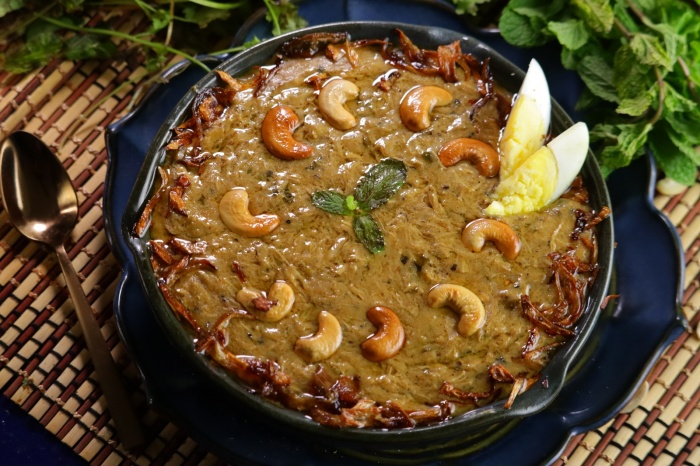

The uber delicious haleem

1Hour 10Minutes 4 servings
Prep time:25 Mins Cook time:45 Mins Total time:1Hour 10 Mins
Ingredients:
- 2 kilograms mutton
- 2 cup broken wheat (dalia)
- 2 teaspoon ginger paste
- 2 teaspoon garlic paste
- 5 tablespoon urad dal
- 5 tablespoon chana dal
- 1 teaspoon red chilli powder
- 1/4 teaspoon turmeric
- 2 cup yoghurt (curd)
- 1 cup onion
- 1/2 cup cashews
- 1 teaspoon garam masala powder
- 1/2 teaspoon peppercorns
- 1 inch cinnamon stick
- 1/2 cup ghee
- 1 cup coriander leaves
- 1/2 cup mint
- 6 green chilli
- water as required
- 3 tablespoon toor daal
- 3 tablespoon yellow moong dal
- salt as required
Procedure:
- To prepare this popular Hyderabadi delicacy, wash and soak the broken wheat or dalia for half an hour. Trim the mutton (boneless) of any excess fat. Add the mutton to a pressure cooker with about 1 cup water and put it over medium flame. Fry the onion until golden brown and set aside.
- To the mutton, add 1/2 tbsp of ginger and garlic paste, half a tsp of salt, red chilli powder, half a tsp of garam masala powder and a pinch of turmeric powder. Pressure cook the mixture for 8-10 mins and simmer for another 15-20 mins. Shred and keep aside.
- Boil the broken wheat along with urad, chana dal, toor dal, and yellow moong daal with a tbsp of ginger-garlic paste, turmeric, 2-3 green chillies, and peppercorns in 8 cups of water until it's cooked completely and the water is absorbed. Blend this mix for a few seconds.
- Heat the oil in another container, add whole spices including cinnamon stick, cooked and shredded lamb, remaining green chillies, half a cup fresh coriander and saute for 2-3 minutes. Add curd and saute for another 10-15 minutes. Add three cups of water and bring to a boil.
- To this, add the blended Dalia and dal mixture and mix well while adding a little ghee as you go. Let it simmer and cook slowly for at least half an hour. Serve hot garnished with fried onions we prepared in step 1, mint leaves, cashew nuts, lemon wedges and the remaining fresh coriander.